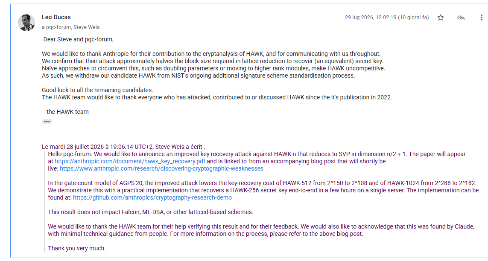

Homomorphic Encryption for Developers
From algebraic foundations and textbook RSA to practical BFV and dependable private computation
On 29 July 2026, the HAWK submission team withdrew its lattice-based digital-signature scheme from the third round of NIST’s Additional Digital Signatures process. The immediate cause was a new key-recovery result by Zygimantas Straznickas and Stephen A. Weis, developed in an Anthropic AI-assisted research experiment and disclosed after coordination with the HAWK authors.
The attack exploits a previously unused Galois involution of HAWK’s power-of-two cyclotomic field. From the public Gram matrix, it constructs a cocycle lattice in which a secret automorphism appears as a shortest vector, thereby reducing HAWK-n key recovery to polynomially many exact-SVP calls in dimension at most n/2+1. Under the gate-count methodology used in the HAWK specification, the resulting estimates reduce the cost of full key recovery for HAWK-512 from about 2^{150} to at most 2^{108} gates, and for HAWK-1024 from about 2^{288} to at most 2^{182}. An end-to-end recovery was also demonstrated for the smaller HAWK-256 challenge parameter.
This article reconstructs the mathematics of the attack, distinguishes the formal reduction from heuristic concrete-security estimates and practical demonstrations, and places the result in the context of earlier automorphism-based cryptanalysis of HAWK. It also explains why the HAWK team concluded that straightforward countermeasures, such as increasing parameters or moving to higher-rank modules, would erase the performance advantages that justified the candidate’s inclusion in NIST’s process, and examines what the withdrawal does—and does not—imply for lattice cryptography, NIST’s post-quantum standardization program, and AI-assisted cryptanalytic research.
A technical reconstruction of the July 2026 withdrawal of HAWK from NIST’s Additional Digital Signatures process: the official record, the algebraic key-recovery attack, the resulting change in concrete security estimates, the decision not to reparameterize, and the role of AI-assisted cryptanalysis.
On 29 July 2026, HAWK ceased to be a candidate in the third round of the US National Institute of Standards and Technology’s Additional Digital Signatures process. The authoritative administrative record is NIST’s own Round 3 page, which now states that the submission team withdrew HAWK from the additional digital-signatures standardization process. The page is marked Updated July 29, 2026.1
That terminology is not cosmetic. HAWK was not a finalized NIST standard that entered deployment and was subsequently deprecated. It had not been selected for standardization. There was therefore no installed NIST-standard HAWK ecosystem to migrate, no formal deprecation period, and no emergency replacement program. The technically correct term is withdrawal of a candidate, not retirement of a standard.
The causal chain is unusually well documented. On 28 July 2026, Zygimantas Straznickas and Stephen A. Weis announced a new HAWK key-recovery attack on the NIST PQC Forum. Their paper gives an unconditional deterministic polynomial-time reduction from HAWK-n key recovery to polynomially many calls to exact Shortest Vector Problem, or SVP, oracles in dimension at most n/2+1.23
The HAWK team then independently accepted the substantive result. In the public NIST forum, Léo Ducas wrote on behalf of the team that the attack approximately halves the block size required in lattice reduction to recover an equivalent secret key. He added that obvious countermeasures, such as doubling parameters or moving to higher-rank modules, would make HAWK uncompetitive. The team therefore withdrew the candidate.4

As Figure 1 shows, the withdrawal was not an inference made by NIST or by external commentators: it was an explicit decision of the HAWK submission team, made after confirming the cryptanalytic result. A few hours later, Dustin Moody of NIST confirmed on the same forum that NIST had updated its Round 3 page to record the withdrawal.5
The public sequence is therefore:
%%{init: {"theme": "neo", "look": "handDrawn", "layout": "elk"}}%%
flowchart TD
A["**28 July 2026**<br/>Straznickas–Weis publicly announce the new HAWK key-recovery attack"]
B["**29 July 2026**<br/>The HAWK team confirms the security impact"]
C["**29 July 2026**<br/>The HAWK team withdraws HAWK from the NIST process"]
D["**29 July 2026**<br/>NIST updates the Round 3 page and records HAWK as withdrawn"]
A --> B --> C --> D
This is not the story of a deployed standard suddenly becoming unsafe. It is the story of a candidate being withdrawn during adversarial evaluation because a new mathematical representation of its key-recovery problem substantially changed the security-performance trade-off.
The correct technical question is therefore not whether AI broke post-quantum cryptography. It did not. The useful question is narrower:
What changed in the mathematical representation of HAWK’s key-recovery problem, why did that change reduce the scheme’s security margin so sharply, and why was withdrawal more rational than reparameterization?
The rest of this article reconstructs that chain from the algebra upward.
NIST’s additional digital-signature process was not a restart of the original Post-Quantum Cryptography project. By 2024 NIST had already standardized ML-DSA, derived from CRYSTALS-Dilithium, and SLH-DSA, derived from SPHINCS+, while FN-DSA, derived from Falcon, was proceeding separately. The additional-signature process was opened in 2022 primarily to increase algorithmic diversity and to investigate candidates with useful performance characteristics not already covered by the first standards.6
That context imposes an economic constraint on any new lattice signature. In NIST IR 8610, the report used to select the third-round candidates, NIST states explicitly that a lattice-based additional signature should provide at least one large performance advantage over both CRYSTALS-Dilithium and Falcon.7 A new lattice signature does not earn standardization merely by being secure. It has to justify the operational and long-term ecosystem cost of adding another lattice construction to the portfolio.
HAWK had such a case. The original HAWK design, by Léo Ducas, Eamonn Postlethwaite, Ludo Pulles, and Wessel van Woerden, was presented as a fast, compact, comparatively simple lattice signature based on the module Lattice Isomorphism Problem, usually abbreviated module-LIP.8 The design deliberately reused ideas associated with NTRUSign and Falcon while changing the underlying security formulation.
The HAWK project’s published performance data gave HAWK-512, its lower-security parameter set, a public key of 1,024 bytes and a signature of about 555 bytes. HAWK-1024 used a public key of 2,440 bytes and a signature of about 1,221 bytes.9 HAWK was also designed to avoid floating-point arithmetic, an implementation characteristic that matters because Falcon’s very compact signatures come with a comparatively delicate floating-point Gaussian-sampling implementation.
NIST summarized the attraction in essentially those terms: HAWK had small signatures, strong performance, and integer-only arithmetic. But NIST also identified the unresolved issue that ultimately became decisive. Its Round 3 report explicitly encouraged further analysis of HAWK’s security assumptions, especially the Search Module Lattice Isomorphism Problem (smLIP) of rank 2 in the specific structure of cyclotomic number fields.10
That sentence is worth treating as a warning label rather than a bureaucratic formality. HAWK’s performance came from highly structured algebra. The same structure that makes arithmetic compact and efficient can introduce symmetries unavailable in a generic lattice. Security therefore depends not merely on the nominal rank but on whether those symmetries let an attacker descend to a lower-dimensional problem.
In July 2026, that is exactly what happened.
To understand the new reduction, it is useful to discard implementation detail temporarily and isolate the mathematical object.
HAWK works over a power-of-two cyclotomic ring. In simplified notation, let
K_n = \mathbb{Q}(\zeta)
be a cyclotomic number field, with ring of integers
R_n = \mathbb{Z}[\zeta],
where \zeta is a suitable power-of-two root of unity. The secret signing key can be represented by a small invertible 2\times 2 matrix
B \in \mathrm{SL}_2(R_n),
while the public information contains a Hermitian Gram matrix of the form
Q = B^\ast B,
where B^\ast denotes the appropriate conjugate transpose.11
This is already different from the usual mental model of a public key hides a random secret vector. The public object preserves substantial algebraic information about the secret basis.
The key-recovery problem is therefore not necessarily to recover the exact byte string originally sampled as the private key. It is sufficient to obtain an equivalent short basis B' satisfying the same public relation:
{B'}^\ast B' = Q.
Such an equivalent basis is enough to recreate signing capability. From the standpoint of unforgeability, recovering an equivalent secret is a key recovery.
Before the 2026 result, the generic lattice-reduction picture was roughly that a direct attack had to operate in dimension about 2n. Because the practical cost of strong lattice reduction grows extremely rapidly with the relevant block size and effective dimension, this was the source of HAWK’s estimated security margin.
The crucial point is that a lattice attack is not priced by the amount of visible data in the public key. It is priced by the geometry of the most efficient lattice representation an adversary can construct.
A new representation can therefore change security without changing a single bit of the algorithm.
The 2026 attack did not emerge from an empty landscape. HAWK’s history already contained a sequence of increasingly specific results about automorphisms and module-LIP.
In 2024, Hengyi Luo, Kaijie Jiang, Yanbin Pan, and Anyu Wang analyzed rank-two module-LIP in the presence of symplectic automorphisms. Their work showed that a weak symplectic automorphism invalidated the original formulation of the one-more (approximate) shortest-vector problem (omSVP) used in HAWK’s forgery-security analysis, although the result did not yield an actual attack against HAWK itself.12
The HAWK specification was subsequently revised so that the efficiently computable symplectic automorphism \omega was included in the omSVP game as a trivial win. The known symmetry therefore no longer counted as solving the revised security game.13 This was a legitimate repair to the security definition, but it left open the more consequential question of whether other nontrivial automorphisms could be exploited for actual key recovery.
But the deeper question remained. Was that the only exploitable symmetry? In 2025, Daniël van Gent and Ludo Pulles sharpened the issue in a paper whose title was unusually predictive: HAWK: Having Automorphisms Weakens Key.14 Their result showed, roughly, that if an attacker possessed a suitable nontrivial automorphism of the underlying integer lattice, HAWK’s smLIP key-recovery problem over the power-of-two cyclotomic ring could be reduced to a lower-rank LIP instance. In the relevant case, that could cut the effective rank by about half.
The difficulty was not the conditional reduction itself, but instantiating its premise. Earlier work had established that a suitable nontrivial automorphism could expose a lower-dimensional formulation of the HAWK key-recovery problem. That result did not yet constitute an attack on HAWK, because the relevant automorphism still had to be identified within HAWK’s actual cyclotomic structure and then exploited efficiently using only public information. The unresolved question was therefore whether such a symmetry existed in a form that could be turned into a practical reduction.
Other work had already shown successful attacks against rank-two module-LIP over different number-field structures. Allombert, Pellet-Mary, and van Woerden, for example, developed attacks using real embeddings.15 Yet HAWK’s power-of-two cyclotomic setting is complex, and the applicability of those methods was not immediate.
This is why NIST’s May 2026 assessment was simultaneously positive and cautious. HAWK had earned a third-round place, but the specific smLIP structure of its cyclotomic field remained a priority for analysis.16
Two months later the missing bridge appeared.
Straznickas and Weis identify an additional order-two Galois involution
\tau : \zeta \mapsto -\zeta.
The existence of such a map is not, by itself, surprising in a cyclotomic field. The cryptanalytic achievement is showing how to combine that involution with HAWK’s public Gram matrix to construct a lower-dimensional lattice that exposes enough information about the secret basis.
Given the secret matrix B, define the cocycle
V_\tau = B^{-1}\tau(B).
The paper shows that V_\tau satisfies public constraints derived from Q and is a shortest vector in a lattice that can be constructed from public information.17
This changes the problem qualitatively. The attacker no longer treats the secret basis as an opaque short object hidden in a generic rank-2n lattice. The Galois symmetry relates B to \tau(B), and the public relation Q=B^\ast B constrains that relation tightly enough to manufacture a new lattice whose shortest vectors encode the cocycle.
The authors further show that, up to scaling, the cocycle lattice is isometric to the highly structured near-hypercubic lattice:
\mathbb{Z}^{\,n/2+1} \;\oplus\; \sqrt{2}\,\mathbb{Z}^{\,n/2-1}.
That near-hypercubic form is what permits a block-reduction argument to reduce recovery to a polynomial number of exact-SVP oracle calls in dimension no greater than
\boxed{\frac{n}{2}+1}.
The headline is therefore not a faster lattice attack. It is a dimension reduction.
The distinction matters because lattice-reduction cost is exponential or superpolynomial in the controlling reduction parameter in the regimes of interest. Cutting the decisive dimension approximately in half can reduce estimated attack cost by many orders of magnitude even though the resulting attack remains computationally expensive.
The HAWK team summarized the practical consequence in the NIST forum with exactly the right abstraction: the attack approximately halves the block size required by lattice reduction to recover an equivalent key.18
That statement is more precise than saying that HAWK’s key length was halved or that half of the key became public. Neither happened. The physical key sizes are unchanged. What changed is the minimum lattice-reduction effort needed to derive an equivalent signing key.
The significance of the Straznickas–Weis result becomes clearer once several quantities that are often conflated in discussions of lattice cryptanalysis are kept separate.
The first is the nominal HAWK parameter n. The second is the rank or dimension of the lattice representation exposed to the attacker. The third is the maximum dimension of the exact-SVP instances appearing in the formal reduction. The fourth is the BKZ block size required under a particular lattice-reduction strategy or heuristic model. The fifth is the resulting computational-cost estimate under a specified cost model.
These quantities are related, but they are not interchangeable.
Before the new attack, the best known key-recovery approach operated directly on HAWK’s rank-2n key lattice. Straznickas and Weis instead construct a public rank-n cocycle lattice and prove that HAWK-n key recovery reduces deterministically, with polynomial overhead, to polynomially many calls to exact SVP in dimension at most
\frac{n}{2}+1.
The formal theorem concerns this exact-SVP oracle dimension. It does not by itself specify the BKZ block size required in a practical lattice-reduction attack, nor does it directly determine a number of gates, CPU-hours, or monetary cost.
Obtaining those quantities requires additional modeling. One must first translate the dimension and geometry of the derived lattice problem into the behavior of a particular lattice-reduction strategy. A concrete or heuristic model can then estimate a corresponding BKZ block size, after which a separate cost model can translate that block size into an overall computational-cost estimate.
The analytical sequence is therefore
d_{\mathrm{SVP}} \longrightarrow \beta_{\mathrm{BKZ}} \longrightarrow C_{\mathrm{attack}},
where d_{\mathrm{SVP}} is the maximum exact-SVP oracle dimension established by the formal reduction, \beta_{\mathrm{BKZ}} is the block size predicted by the chosen lattice-reduction model, and C_{\mathrm{attack}} is the resulting concrete computational-cost estimate.
For the submitted HAWK parameter sets, the formal bound gives
d_{\mathrm{SVP}}\leq257
for HAWK-512 and
d_{\mathrm{SVP}}\leq513
for HAWK-1024.
These values should not be confused with the designers’ previous BKZ block-size estimates. The HAWK specification used block sizes \beta_{\mathrm{key}}=452 for HAWK-512 and \beta_{\mathrm{key}}=940 for HAWK-1024 in its key-recovery analysis. The new theorem instead establishes exact-SVP oracle dimensions of 257 and 513, respectively.19
The attack paper then goes one step further. Under its heuristic GSA-intersect analysis of progressive BKZ on the rescaled cocycle lattice, the estimated effective block sizes fall to approximately 205 for HAWK-512 and 432 for HAWK-1024.20
This distinction is important because the claims have different evidentiary status. The n/2+1 bound is part of the formal deterministic reduction. The BKZ block sizes are model-dependent heuristic estimates. The final gate counts require an additional computational-cost model. Treating all three as the same quantity would blur the boundary between theorem, heuristic cryptanalysis, and concrete cost estimation.
Using the AGPS20 gate-count methodology also employed in the HAWK specification, Straznickas and Weis report that the estimated total key-recovery cost for HAWK-512 changes from approximately
2^{150}
gates to at most approximately
2^{108}
gates. For HAWK-1024, the corresponding estimate changes from approximately
2^{288}
gates to at most approximately
2^{182}
gates.21
The magnitude of these changes is substantial. Relative to the previous estimates, the modeled attack cost decreases by factors of
\frac{2^{150}}{2^{108}}=2^{42}
for HAWK-512 and
\frac{2^{288}}{2^{182}}=2^{106}
for HAWK-1024.
These ratios should not be interpreted as measurements of physical speedup on a particular computer. They quantify the change within the specified gate-count model. Their significance is that the new mathematical representation removes tens—or, for HAWK-1024, more than one hundred—bits from the exponent of the previously estimated attack cost.
The authors also provide a more aggressive heuristic analysis. Under the progressive-BKZ model described above, they estimate total key-recovery costs of approximately 2^{80.8} gates for HAWK-512 and 2^{146.5} gates for HAWK-1024.22
The different levels of analysis can therefore be summarized as follows:
| Parameter set | Previous BKZ estimate | Formal exact-SVP dimension bound | Heuristic BKZ estimate | Previous estimated key-recovery cost | New upper estimate | New heuristic estimate |
|---|---|---|---|---|---|---|
| HAWK-512 | 452 | \leq257 | \approx205 | \approx2^{150} gates | \leq2^{108} gates | \approx2^{80.8} gates |
| HAWK-1024 | 940 | \leq513 | \approx432 | \approx2^{288} gates | \leq2^{182} gates | \approx2^{146.5} gates |
The table makes explicit why statements such as the attack halves the block size need to be interpreted carefully. The formal theorem is not a theorem that BKZ requires block size 257 or 513. It is a reduction to exact-SVP instances of those maximum dimensions. The HAWK team’s public description that the attack “approximately halves the block size” summarizes the practical lattice-reduction consequence, while the paper’s heuristic analysis separately derives effective BKZ values of approximately 205 and 432.2324
The cost figures require three further qualifications.
First, a gate count is a computational cost model, not a stopwatch. A statement such as 2^{108} gates should not be interpreted as a direct prediction of elapsed time on a particular processor, GPU cluster, or other physical implementation. Translating an abstract gate count into wall-clock time or monetary cost requires additional assumptions about hardware architecture, parallelism, memory, communication overhead, and implementation efficiency.
Second, the formal n/2+1 reduction, the heuristic BKZ estimates, and the resulting gate counts are distinct claims. The first is a mathematical reduction. The second depends on a model of lattice-reduction behavior. The third additionally depends on a model for translating the reduction into computational work. The mathematical theorem is consequently more durable than any particular concrete-security estimate.
Third, the result is not a polynomial-time attack on HAWK-512 or HAWK-1024. Key recovery at those parameter sizes remains computationally expensive. The cryptanalytic significance is instead that the best known attack moved sufficiently far toward the defender that the security margin associated with HAWK’s original performance parameters could no longer be treated as before.
HAWK-256 occupies a different evidentiary role. It is a challenge parameter set rather than one of the parameter sets proposed for standardization. Straznickas and Weis implemented the complete attack against HAWK-256 and recovered an equivalent secret key end to end in a few hours on a single server.25
A compact operational summary is therefore:
| Parameter set | Intended role | Previous estimated total key-recovery cost | New upper estimate | New heuristic estimate | Practical recovery |
|---|---|---|---|---|---|
| HAWK-512 | lower-security candidate set | \approx2^{150} gates | \leq2^{108} gates | \approx2^{80.8} gates | not demonstrated |
| HAWK-1024 | higher-security candidate set | \approx2^{288} gates | \leq2^{182} gates | \approx2^{146.5} gates | not demonstrated |
| HAWK-256 | challenge parameter set | no specification gate-count target | structural reduction applies | experimentally tractable at this scale | equivalent key recovered end to end |
The HAWK-256 experiment is important because it connects the formal reduction to an executable attack pipeline:
%%{init: {"theme": "neo", "look": "handDrawn", "layout": "elk"}}%%
flowchart TD
A["**Public HAWK key**<br/>Hermitian Gram matrix $Q$"]
B["**Construct cocycle lattice**<br/>$\Lambda_B^{(\tau)}$"]
C["**Short-vector recovery**<br/>recover $\pm V_\tau$"]
D["**Descent and reconstruction**<br/>derive an equivalent basis $B'$"]
E["**Equivalent secret key**<br/>recover signing capability"]
A --> B --> C --> D --> E
It demonstrates that the reduction is not merely a symbolic rearrangement of the security problem. The relevant algebraic structures can actually be constructed from a public HAWK key, reduced computationally, and used to recover signing capability at the reduced parameter size.
It does not establish that HAWK-512 or HAWK-1024 can presently be recovered in a few hours on commodity hardware. The security consequence precedes that threshold. A candidate cryptosystem can cease to provide the security margin and performance advantage required for standardization well before its principal parameter sets become practically recoverable on ordinary computing hardware.
That distinction is precisely why the n/2+1 result mattered. The attack did not make HAWK trivial. It changed the dimension of the hard problem that controls the best known key-recovery strategy, which in turn changed the concrete-security estimates by amounts large enough to alter the security–performance trade-off on which HAWK’s candidacy depended.
There is a further subtlety in the expression key recovery. For a signature scheme, an attacker need not reconstruct the exact secret basis originally sampled during key generation. Cryptographically, it is sufficient to recover any equivalent secret representation that enables the generation of signatures accepted by the public verification algorithm. In HAWK, the relevant objective is therefore not necessarily recovery of the original basis B, but recovery of some basis B' satisfying the same public Gram relation.
The Straznickas–Weis attack uses the Galois cocycle V_\tau as the intermediate object linking public information to such an equivalent secret. Once the cocycle associated with the involution \tau has been recovered from the public cocycle lattice, the descent procedure—building on the automorphism-based framework developed by van Gent and Pulles—can reconstruct an equivalent secret basis B'.26
Conceptually, the recovery path is
Q \Longrightarrow \Lambda_B^{(\tau)} \Longrightarrow V_\tau \Longrightarrow B' \Longrightarrow \text{valid signing capability}.
Here Q is the public Hermitian Gram matrix and \Lambda_B^{(\tau)} is the publicly constructible cocycle lattice. The attack therefore does not extract the coefficients of the original secret key directly. Instead, the public Gram matrix exposes sufficient invariant algebraic structure that, once the relevant Galois symmetry is exploited, key recovery can be reformulated as a lower-dimensional geometric problem. Solving that problem yields an equivalent basis satisfying
{B'}^\ast B' = Q,
which is sufficient to recover the cryptographic capability associated with the secret key.
This is a recurring pattern in algebraic cryptanalysis. Structured public keys are designed to be compact representations of large mathematical objects. Compression is obtained because many coordinates are not independent; they are related by ring operations, module structure, conjugation, or automorphisms. Those relations save bandwidth and computation, but every public relation is also a potential equation for the cryptanalyst.
The design problem is not to eliminate structure. Modern efficient public-key cryptography could scarcely function without it. The problem is to use structure whose automorphisms do not accidentally turn the hard problem into a simpler one.
HAWK’s July 2026 failure was a failure of that balance.
A cryptographic attack does not automatically imply withdrawal. Many schemes survive new attacks by increasing parameters, modifying a sampling rule, changing a hash domain, or excluding a weak structural case.
The HAWK team explicitly considered the obvious repairs and rejected them as standardization options. In its withdrawal message, the team wrote that naive countermeasures such as doubling parameters or moving to higher-rank modules would make HAWK uncompetitive.27 This is not merely an implementation preference. It follows from the criteria under which HAWK was being evaluated.
Recall NIST’s rule: a lattice-based candidate in the additional-signature competition needed a large performance advantage relative to both Dilithium and Falcon.28
HAWK’s principal differentiators were its compact signatures, high performance, and avoidance of floating-point arithmetic. Those advantages mattered because NIST was not evaluating HAWK in isolation: as an additional lattice-based signature candidate, it had to offer a sufficiently compelling advantage over already selected or maturing alternatives. Once the new attack reduced the effective cost of key recovery, the straightforward remedies identified by the HAWK team—such as doubling the parameters or moving to higher-rank modules—would, in the team’s judgment, have made HAWK uncompetitive. Those changes would sacrifice some combination of key and signature compactness, computational performance, or implementation simplicity.29
The withdrawal should therefore be understood as a security–performance trade-off, rather than as a binary judgment that the underlying mathematics had become unusable. A modified HAWK construction might still have been capable of achieving an acceptable security level, but only at a point in the design space where its original advantages were substantially diminished. At that stage, the question facing the designers was no longer merely whether HAWK could be made secure, but whether a repaired HAWK would still provide sufficient value to justify standardization alongside more mature alternatives.
This distinction is important because cryptographic standardization is inherently multidimensional. A candidate is evaluated not only by its estimated security margin, but also by signature and public-key size, signing and verification cost, memory requirements, implementation complexity, maturity of its underlying assumptions, and the degree of diversification it contributes to the standards portfolio. Improving one of these properties can degrade several others.
The HAWK team’s use of the term uncompetitive should therefore be read in precisely this sense. The new cryptanalysis moved the submitted parameters away from the security–performance frontier that had justified HAWK’s candidacy. Straightforward countermeasures could restore security margin, but only by sacrificing enough of the scheme’s efficiency advantage that the resulting construction would no longer present a compelling standardization case.
The public chronology is unusually well documented because the decisive discussion happened on the NIST PQC Forum.
Steve Weis announced HAWK-n Key Recovery Reduces to SVP in Dimension n/2+1 on 28 July 2026. The forum message summarized the technical reduction, gave the HAWK-512 and HAWK-1024 cost changes, reported the end-to-end HAWK-256 recovery, and emphasized that the result did not apply to Falcon, ML-DSA, or lattice schemes in general.30
Anthropic published a parallel research note describing the work as the output of an AI-assisted cryptanalysis experiment using Claude in an agentic research environment.31
Anthropic states that the HAWK result was privately shared with the HAWK authors in June and that public disclosure was coordinated with them.32 That matters because a standards candidate is exactly the context in which adversarial review should be maximized while disclosure remains disciplined.
The technical paper also acknowledges interaction with the HAWK team during validation.33
Léo Ducas responded on behalf of the HAWK team. The message does three things that should be kept separate:
That is stronger evidence than an external headline declaring a candidate broken. The designers themselves accepted the attack and linked the technical result directly to the loss of the scheme’s standardization rationale.
NIST’s Dustin Moody subsequently confirmed that the Round 3 candidate page had been updated to reflect HAWK’s withdrawal.35 That page is the authoritative administrative record of HAWK’s status in the standardization process: it states that the submission team withdrew HAWK from the Additional Digital Signatures process and records the update on 29 July 2026.36
The allocation of responsibility is important. HAWK was not rejected by NIST after a completed comparative evaluation of the Round 3 candidates. The submission team itself withdrew the scheme after assessing the new cryptanalytic result and concluding that straightforward countermeasures would undermine its competitiveness. NIST’s role at that point was to record the change in candidate status.
This distinction also affects how the event should be described historically. The withdrawal was a designer-initiated response to a newly validated security result, not a final adverse selection decision issued by NIST at the conclusion of Round 3.
The picture became more nuanced almost immediately. On 29 July, Hengyi Luo announced in the same NIST PQC Forum thread a distinct HAWK attack that reduces the problem to SVP in dimension approximately 3n/4. Luo described that result as having been produced with GPT-5.6 under minimal technical guidance from human researchers, with the implementation developed using Codex.37 Although weaker than the n/2+1 reduction of Straznickas and Weis, it provided a mathematically different route to dimensional reduction.
On 31 July, Damien Robert then relayed independent work by Guilhem Mureau and Alice Pellet-Mary, who themselves described their result as a third key-recovery attack on HAWK. Their construction reduces rank-two module-LIP over the cyclotomic field to rank-three module-LIP over its maximal totally real subfield, whose degree is half that of the original field. This yields exact-SVP calls in dimension at most approximately 3n/4+1, again weaker than the n/2+1 bound of Straznickas and Weis but obtained through a different algebraic formalism.38
Mureau and Pellet-Mary also reported a toy implementation of the new stage of their reduction, reaching field degree n=128 in roughly two hours on a laptop with BKZ block size 30. They explicitly distinguished their research process from the AI-assisted attacks, stating that the cryptanalytic result was found by the human researchers and that language models were used only for editorial assistance and technical questions concerning quaternion algebras.39
The importance of this human-developed line of work is therefore not that it supersedes the Straznickas–Weis attack; its dimensional bound is less favorable to the attacker. Rather, it provides independent evidence that the weakness exposed in 2026 was rooted in HAWK’s algebraic structure rather than in a single idiosyncratic attack construction. Different researchers, following different reduction paths, were finding ways to exploit the symmetries of the same power-of-two cyclotomic setting to move key recovery into lower-dimensional problems.
This also changes how the AI contribution should be interpreted. The Straznickas–Weis result did not emerge against a background in which HAWK’s automorphism structure had gone entirely unnoticed. By 2024, symplectic automorphisms had already forced revisions to the formulation of HAWK’s security assumptions. In 2025, van Gent and Pulles had shown conditionally that access to an appropriate nontrivial automorphism could substantially reduce the dimension of the key-recovery problem, while parallel work on rank-two module-LIP had further developed descent and embedding techniques. The 2026 attack supplied the crucial missing ingredient by identifying an exploitable Galois involution and turning it into a concrete public-lattice construction.
The historical progression is therefore better understood as a narrowing cryptanalytic trajectory: first, automorphisms were recognized as relevant to the security model; then their potential to weaken key recovery was established conditionally; finally, an explicit symmetry of the HAWK field was converted into an effective reduction. The independent Mureau–Pellet-Mary approach reinforces the conclusion that several lines of research were converging on the same structural vulnerability.
The appropriate lesson is consequently not that human cryptanalysts had overlooked an obvious weakness that an AI system suddenly discovered. The relevant mathematical attack surface had been under increasingly focused study for several years. The AI-assisted Straznickas–Weis result was significant because it found a particularly strong completion of that trajectory and reduced the decisive exact-SVP dimension to n/2+1.
Anthropic’s involvement deserves separate treatment because the HAWK result will inevitably be cited in broader arguments about AI-assisted science and automated mathematical research.
According to Anthropic, the HAWK attack was developed using Claude in a multi-agent research environment over roughly 60 hours, at an API cost of about $100,000 for the HAWK experiment. Anthropic characterizes the human contribution during the search phase as relatively limited technical supervision and project management, followed by conventional human verification, interaction with the HAWK authors, and coordinated disclosure.40 These details are relevant, but they should be interpreted as a first-party account of the experimental process rather than as an independently measured decomposition of human and machine contribution.
What is independently significant is the resulting research artifact. The work produced a precise cryptanalytic construction, a technical paper, executable code for the reduced-parameter demonstration, and a result that the HAWK team examined and accepted as sufficiently consequential to justify withdrawal from the NIST process. On that basis, it is reasonable to describe the episode as AI-assisted cryptanalysis of genuine research significance. It is not reasonable, on the evidence of a single experiment, to infer that autonomous AI systems have generally surpassed expert cryptanalysts.
The research process is better understood as a composition of capabilities rather than as an isolated act of machine discovery. The attack depended on an existing body of human cryptanalytic work on HAWK, module-LIP, automorphisms, and lattice descent; on an agentic system capable of synthesizing that literature and exploring candidate derivations; on computational experiments used to test hypotheses; and on subsequent human verification of the mathematical result. The novelty lies in how these components were combined and at what scale, not in the elimination of prior human knowledge or of expert validation.
The potentially important discontinuity is therefore research throughput. Cryptanalysis is constrained not only by computational resources but by the amount of expert attention that can be devoted to reading prior work, maintaining alternative derivations, testing special cases, writing exploratory code, and abandoning unproductive paths. An agentic system capable of sustaining many such branches for tens of hours can increase the number of technically plausible hypotheses explored per unit of human supervision.
If that capability generalizes, the practical consequence for cryptographic evaluation could be substantial. Candidate schemes would face a denser adversarial search process, with more systematic enumeration of algebraic symmetries, faster recombination of previously published lemmas, broader exploration of parameter regimes, and more persistent testing of reductions that a human team might otherwise leave unexplored. This would not alter the epistemic standard required for cryptography: formal arguments must still be inspectable, computational claims reproducible, and security consequences independently validated. It would, however, change the scale at which potentially relevant attack paths can be investigated.
The NIST forum announcement and the Straznickas–Weis paper both emphasize that the new key-recovery technique is specific to HAWK’s algebraic and public-key structure, rather than a generic attack on lattice signatures.4142 That qualification follows directly from the construction of the attack.
HAWK and Falcon share ancestry in NTRU-style lattice cryptography, but they expose different information through their public keys. In HAWK, the attacker has access to the Hermitian Gram matrix
Q=B^\ast B,
where B is the secret basis. Combined with the determinant-one condition \det B=1, this public relation supplies the algebraic constraints needed to construct the cocycle lattice in which V_\tau=B^{-1}\tau(B) appears as a shortest vector. The resulting geometry is what ultimately permits the reduction to exact-SVP instances of dimension at most n/2+1.
Falcon does not expose the corresponding Gram matrix. Its public key is instead derived from the NTRU relation
h=g f^{-1}\pmod q,
and its secret NTRU basis has determinant q rather than 1. Straznickas and Weis show that these differences prevent the two key ingredients of the HAWK construction from carrying over: the public constraints used to obtain the reduced cocycle lattice are unavailable, and the determinant argument placing the secret cocycle at the lattice minimum no longer applies in the same way.43 Consequently, applying the same Galois involution to Falcon does not reproduce the dimensional collapse obtained for HAWK.
ML-DSA is structurally more distant still: although it is also lattice based, its public-key representation and underlying security problems are different from the module-LIP and public-Gram setting exploited here.
The scope of the result must therefore remain local. The attack demonstrates a weakness in a particular combination of HAWK properties—its cyclotomic structure, public Hermitian Gram representation, determinant-one secret basis, and exploitable Galois symmetry. It provides no basis for inferring a corresponding weakness in Falcon, ML-DSA, or lattice cryptography as a whole.
This distinction illustrates a broader principle of cryptanalysis: membership in the same mathematical family does not imply common vulnerability. Two schemes may both be described as lattice based while exposing fundamentally different invariants, algebraic relations, and reduction opportunities to an adversary. Cryptanalytic conclusions therefore have to be propagated according to the precise structural assumptions used by the attack, not according to the broad taxonomy of the primitive.
The word broken is useful only after specifying the property and threat model. At least four meanings are possible.
So the most precise formulation is:
HAWK was cryptanalytically weakened enough that its existing parameter sets no longer offered a satisfactory security-performance trade-off for NIST standardization, and the designers judged straightforward repairs to remove the advantages that justified the candidate.
That statement is stronger than an attack was published and narrower than the mathematics of HAWK is completely broken.
The withdrawal of HAWK should not be read as evidence that NIST’s post-quantum standardization process failed. The sequence of events supports almost the opposite interpretation. NIST advanced HAWK to Round 3 while explicitly identifying the maturity of its underlying assumptions, and in particular the structure of its smLIP instantiation over cyclotomic fields, as an area requiring further cryptanalytic scrutiny.47 Subsequent research then produced exactly the kind of structural analysis that the additional evaluation round was intended to elicit.
Once the new key-recovery reduction was disclosed, the HAWK designers independently examined its consequences, accepted the material reduction in security margin, assessed straightforward countermeasures, and concluded that restoring the intended margin would eliminate the performance advantages that justified HAWK’s candidacy. They therefore withdrew the scheme before NIST made a final standardization decision, and NIST updated the candidate record accordingly.
This is a normal and desirable outcome of adversarial cryptographic evaluation. A standardization process cannot prove that no stronger attack exists: the absence of unknown cryptanalysis is not a property that can be established by finite testing or review. What the process can do is expose a candidate to sustained public analysis, make its security assumptions explicit, incentivize independent attacks, and provide enough time for those assumptions to be challenged before large-scale deployment.
The relevant process is therefore one of progressive reduction of uncertainty. A candidate begins with a specification and a security argument; independent researchers search for alternative representations and attacks; concrete security estimates are revised as new techniques emerge; and the candidate is retained, modified, or withdrawn according to the resulting security–performance trade-off. HAWK followed that path exactly.
The timing of the attack is also not anomalous. Late-stage rounds exist because significant cryptanalysis often requires years of cumulative work. In HAWK’s case, the 2024 and 2025 literature already showed that the mathematical understanding of its automorphisms and module-LIP structure was still developing. The 2026 result should therefore be seen as the culmination of an active cryptanalytic trajectory rather than as evidence that an obviously defective construction had escaped review until the last moment.
A process in which every late-stage candidate survived unchanged would not necessarily indicate superior cryptographic quality. It could just as plausibly indicate that the evaluation had failed to generate sufficiently strong adversarial pressure. In this sense, HAWK’s withdrawal is evidence that the standardization process was capable of absorbing new cryptanalytic information and allowing a candidate to leave the process before standardization.
HAWK illustrates a broader design tension in post-quantum cryptography: the algebraic structure that makes a scheme compact and efficient can also create additional relations for an attacker to exploit. Ring- and module-based constructions avoid the cost of representing a large unstructured lattice explicitly. Instead, they encode many lattice coordinates through a much smaller number of polynomial or module elements, allowing arithmetic to reuse the multiplication, conjugation, and reduction operations of the underlying number ring.
That compression is one of the principal reasons structured lattice cryptography can achieve practical key sizes and high throughput. It is not, however, a free optimization. The same algebra introduces a nontrivial symmetry group: Galois automorphisms, conjugations, invariant subfields, module actions, and other transformations relate coordinates that would be independent in a generic lattice. Those relations are harmless only if they fail to reveal a computationally easier representation of the underlying hard problem.
The relevant security parameter is therefore not simply the nominal lattice dimension stated in the specification. For a structured construction, the cryptanalytic question is whether the public instance can be transformed—through automorphisms, descent to fixed fields, invariant subspaces, quotient structures, or publicly exposed bilinear forms—into another lattice problem of smaller effective dimension or more favorable geometry.
This distinction is particularly important for HAWK. Before the 2026 attack, the security analysis was based on the cost of attacking the natural high-dimensional representation of the key-recovery problem. Straznickas and Weis showed that the combination of HAWK’s cyclotomic structure, its public Hermitian Gram matrix, and the additional involution \tau exposes a different representation: a public cocycle lattice whose shortest-vector structure ultimately reduces key recovery to exact-SVP instances of dimension at most n/2+1.
The general lesson is therefore not that algebraic structure is intrinsically undesirable. Without it, many efficient post-quantum constructions would be impractical. Rather, the security analysis of a structured primitive must treat the full set of efficiently exploitable symmetries as part of the adversary’s input. The meaningful attack dimension is the smallest dimension that remains after those structural reductions have been exhausted, not necessarily the dimension of the lattice representation chosen by the designer.
In HAWK, that distinction became decisive in July 2026: the nominal problem did not change, but the best known representation of the attack did.
There is also a broader governance lesson. Organizations often represent cryptographic status as a binary attribute—approved or not approved—but that abstraction conceals the variables that actually determine cryptographic risk. A primitive is not secure in the absolute; it has an estimated security margin relative to the best known attacks, the assumptions underlying those attacks, and the computational model used to evaluate them. That margin can change discontinuously when a new reduction, symmetry, or attack representation is discovered.
For standards selection, the relevant decision is therefore inherently multidimensional. A candidate can be viewed as occupying a point in a design space characterized by
V = f(S,P,I,D,M),
where S denotes the estimated security margin, P the combined performance and size characteristics, I the implementation complexity and associated side-channel exposure, D the diversification value relative to existing standards, and M the maturity of the underlying assumptions and their cryptanalytic analysis.
The July 2026 result affected S directly by reducing the estimated cost of key recovery. Restoring that margin through larger parameters or a higher-rank construction would in turn degrade P, while potentially increasing I. At the same time, HAWK had to provide substantial value on D, because NIST already had standardized or maturing lattice-signature alternatives. The withdrawal therefore reflects a change in the overall position of HAWK within this design space rather than a single threshold crossing in one security metric.
The same reasoning applies to operational cryptography. A migration program should not ask only whether an algorithm is currently broken or unbroken. It should track the size of its remaining security margin, the assumptions on which that margin depends, the maturity and direction of the relevant cryptanalysis, the cost of parameter increases or algorithm replacement, and the architectural effort required to absorb such changes. In that sense, cryptographic governance is less about maintaining a static list of approved primitives than about continuously managing the distance between deployed constructions and the evolving frontier of feasible attacks.
For an enterprise already implementing NIST post-quantum standards, the immediate operational consequence of the HAWK withdrawal is close to zero.
HAWK was not an approved NIST standard and, according to Anthropic’s disclosure, there was no known production ecosystem dependent on it.48 Organizations following NIST’s finalized standards were not being told to deploy HAWK.
Three conclusions nevertheless matter:
A NIST post-quantum algorithm was broken by AI
would be materially misleading.
A more accurate sentence is:
An additional NIST signature candidate was withdrawn during third-round evaluation after an AI-assisted research effort found a structural key-recovery reduction that substantially weakened its security estimates.
The difference is not cosmetic. It determines whether management concludes that an existing migration must stop or, correctly, that the competitive review process eliminated a candidate before deployment.
The HAWK result also changes the threat model for cryptographic evaluation, although not in the sensational sense that AI systems can now be assumed to autonomously defeat modern cryptography. The more immediate change concerns the economics and throughput of adversarial research.
Cryptanalysis is constrained by a finite search budget. At a first approximation, that budget depends on both the amount of expert effort available and the number of technically plausible hypotheses that can be explored within that effort:
B_{\mathrm{research}} \propto T_{\mathrm{expert}} \times R_{\mathrm{hypotheses}},
where T_{\mathrm{expert}} denotes the available expert-analysis time and R_{\mathrm{hypotheses}} the rate at which candidate attack paths can be generated, developed, tested, and discarded.
Traditional cryptanalysis is highly labor intensive. Progress typically requires reading and reconciling prior literature, identifying structural anomalies, constructing candidate reductions, checking algebraic special cases, implementing experiments, interpreting failures, and repeatedly reformulating the attack. The decisive result may ultimately appear as a compact theorem, but reaching it often involves a large search tree of unsuccessful or incomplete derivations.
Agentic models can potentially increase the rate at which that search tree is explored. They can sustain multiple lines of reasoning over long periods, compare results across papers, manipulate symbolic expressions, generate experimental code, test reduced instances, and revisit hypotheses that would otherwise compete for scarce human attention. Their immediate effect is therefore not necessarily to alter the theoretical capabilities of cryptanalysis, but to increase the fraction of the plausible attack surface that can be investigated within a fixed period.
That increase in throughput does not weaken the evidentiary standard required for cryptographic claims. On the contrary, higher rates of automated hypothesis generation make rigorous validation more important. A plausible but incorrect reduction has no cryptanalytic value, and an erroneous security claim can itself become a source of risk. A credible attack must therefore still provide a precisely defined threat model, a reproducible construction, a human-auditable mathematical argument, computational validation where appropriate, independent scrutiny, and an explicit distinction between formally established results, heuristic cost estimates, and engineering extrapolations.
The HAWK case satisfies an unusually substantial portion of this validation chain. The result was formalized in a technical paper, accompanied by executable code and an end-to-end attack on the reduced HAWK-256 parameter set, privately disclosed to the designers, independently examined by the HAWK team, discussed publicly in the NIST PQC Forum, and followed by the withdrawal of the candidate from the standardization process.505152
The appropriate operational response is therefore neither to grant AI-generated cryptanalytic claims automatic credibility nor to dismiss them as speculative until reproduced entirely by humans. Evaluation processes should instead be prepared for a higher arrival rate of technically sophisticated candidate attacks and should have mechanisms for rapid mathematical triage, independent replication, concrete-security reassessment, and coordinated disclosure.
In this sense, the first-order effect of AI on cryptanalysis is likely to be a change in the rate at which potentially valid attacks are discovered and tested, rather than a change in what constitutes cryptographic proof. The search process may become substantially more automated; the epistemic requirements for accepting the result do not.
HAWK’s withdrawal should not obscure the scientific value of the scheme. Cryptographic candidates that ultimately fail to reach standardization can still make substantial contributions by exposing poorly understood assumptions, attracting sustained adversarial analysis, and forcing the community to develop new techniques for reasoning about structured hard problems.
In HAWK’s case, that process generated a significant body of work on module-LIP, overstretched module-SVP, automorphisms of structured lattices, cyclotomic field structure, descent techniques, and the relationship between public Gram matrices and equivalent-key recovery. The successive attacks did more than reduce HAWK’s security estimates: they clarified which algebraic properties can become dangerous when public structure and hidden lattice geometry interact.
That knowledge survives the withdrawal. Future designs can incorporate the resulting constraints from the outset, for example by examining whether public invariants expose useful automorphisms, whether fixed-field descent reduces the effective problem dimension, or whether determinant and Gram relations create unexpectedly short representations. In this sense, a cryptanalytic failure can become a design input for the next generation of constructions.
A withdrawn candidate can therefore be unsuccessful as a standard while remaining successful as a research object. Its value lies partly in the new mathematical understanding produced by attempts to break it.
This is one of the principal strengths of open cryptographic evaluation. Public competitions and multi-round standardization processes create high-value common targets around which designers, implementers, and cryptanalysts can accumulate results over several years. Techniques developed against candidates that do not survive are not lost; they improve the analysis of related constructions and sharpen the criteria applied to future proposals.
HAWK now belongs to that lineage. Its withdrawal closes its path through the NIST process, but the cryptanalytic work it generated will remain part of the technical knowledge used to evaluate structured lattice signatures.
The public narrative can be decomposed into statements with different evidentiary strength.
Strongly supported:
Supported but dependent on Anthropic’s own experimental reporting:
Not established by this event:
That hierarchy of claims matters. The event is already significant without inflating it.
A credible account should therefore resist two symmetric errors: minimizing the work as just another estimator tweak, and exaggerating it into evidence that post-quantum cryptography has collapsed. It was a mathematically meaningful structural attack with an immediate standards-process effect. That is enough.
The HAWK episode suggests a more systematic review discipline for structured post-quantum constructions. For any ring- or module-based candidate, the analysis should begin not only with the hard problem asserted by the security reduction, but also with the algebraic symmetries that remain efficiently accessible from the public instance. Relevant objects include the automorphism groups of the underlying number field and ring, module automorphisms, conjugations, fixed-field operations, and invariances induced by public bilinear, Hermitian, norm, trace, or determinant relations.
For each nontrivial automorphism \sigma, the central question is whether its action on the hidden secret can be converted into an object constrained by public data. In a basis-based construction, natural candidates include expressions such as
B^{-1}\sigma(B)
or
B^\ast\sigma(B).
If such an object can be characterized publicly, the next step is to determine the mathematical space in which it lives. It may descend to a proper subfield, belong to a fixed-point subspace, decompose along eigenspaces, induce a quotient or submodule problem, or define a lattice whose effective dimension is substantially smaller than that of the original secret-key representation.
This suggests a useful order of analysis. The effective attack dimension should be established before considerable effort is invested in optimizing concrete lattice-reduction costs:
d_{\mathrm{nominal}} \longrightarrow d_{\mathrm{effective}} \longrightarrow \beta_{\mathrm{required}} \longrightarrow C_{\mathrm{attack}}.
Here d_{\mathrm{nominal}} is the dimension suggested by the direct representation of the problem, d_{\mathrm{effective}} is the smallest dimension obtained after exploiting known algebraic reductions, \beta_{\mathrm{required}} is the corresponding lattice-reduction block size, and C_{\mathrm{attack}} is the resulting concrete cost estimate. Reversing this order risks producing increasingly precise estimates for an attack formulated in a dimension that later turns out not to be cryptanalytically relevant.
HAWK’s history also shows why conditional weaknesses should be tracked explicitly. The 2025 result of van Gent and Pulles did not itself instantiate the final key-recovery attack, but it identified a condition under which HAWK’s problem would become substantially easier: the availability of a suitable nontrivial automorphism.58 Once the 2026 work supplied such an exploitable symmetry, the conditional weakness became an actual reduction.
A cryptanalytic risk register for a candidate could therefore record not only the best known attack cost, but also the unresolved structural conditions that could invalidate that estimate:
| Structural issue | Unresolved condition | Consequence if resolved adversely | HAWK status |
|---|---|---|---|
| Nontrivial automorphisms | Find an efficiently exploitable symmetry of the HAWK instance | Reduction to a lower-dimensional key-recovery problem | Resolved adversely in 2026 |
| Field descent | Identify a subfield or embedding that preserves sufficient secret structure | Lower-dimensional module-LIP or related lattice problem | Relevant to parallel cryptanalysis |
| Public Gram invariants | Convert public Hermitian information into constraints on secret-derived objects | Recovery of an equivalent secret through a public auxiliary lattice | Central to the 2026 attack |
| Special lattice geometry | Show that the auxiliary lattice belongs to a class admitting stronger reduction techniques | Smaller exact-SVP dimension and lower required block size | Central to the n/2+1 reduction |
This representation is more informative than recording only a value such as best known attack: 2^x. A single complexity estimate describes the current endpoint of the analysis; it does not reveal the structural assumptions on which that number depends or the mechanisms by which it could collapse. HAWK demonstrates that, for highly structured cryptography, those unresolved mechanisms are themselves part of the security state and should be tracked as explicitly as the current attack cost.
The withdrawal of HAWK is ultimately less a story about one weakened parameter set than about cryptanalytic representation. Before the 2026 result, key recovery was evaluated through a high-dimensional structured lattice problem whose estimated cost supported HAWK’s security claims. Straznickas and Weis did not change the public key, the verification algorithm, or the implementation. They changed the mathematical object through which the same public information was analyzed.
The decisive step was the exploitation of the additional Galois involution \tau. Combined with HAWK’s public Hermitian Gram matrix, that symmetry makes it possible to construct a public cocycle lattice containing the secret-derived element V_\tau as a shortest vector. The geometry of this auxiliary lattice then permits the key-recovery problem to be reduced to polynomially many exact-SVP instances of dimension at most n/2+1. The resulting attack is therefore stronger not because the previously known attack was implemented faster, but because the same public key could be mapped to a different and substantially smaller geometric problem that is sufficient for recovering an equivalent signing key.59
This illustrates a fundamental property of cryptographic security. The relevant hardness is not the difficulty of the problem representation chosen by the designer, but the difficulty of the easiest equivalent problem that can be derived by an adversary from public information. Nominal dimension, published security reductions, and concrete attack estimates are therefore provisional: each remains valid only for as long as no better mathematical representation of the attack is known.
For HAWK, the sequence was unusually clear. Its cyclotomic structure supplied the additional involution; the involution exposed a publicly constrained cocycle; the cocycle produced a lower-dimensional shortest-vector problem; and the resulting reduction substantially lowered the estimated cost of equivalent-key recovery. Straightforward remedies identified by the HAWK team, including doubling the parameters or moving to higher-rank modules, would in its judgment have removed enough of HAWK’s performance advantage to make the candidate uncompetitive.60
That explains the withdrawal. From a cybersecurity perspective, however, the more important lesson begins one level above HAWK itself.
The conventional description of the quantum threat imagines a single race: defenders must replace RSA and elliptic-curve cryptography before a cryptographically relevant quantum computer can execute Shor’s algorithm at the required scale. That remains true, but it is incomplete.
As I argued in When Digital Trust Expires: Quantum Computing and the Collapse of Signature-Based Security, the relevant security horizon is not defined only by the arrival date of a quantum computer. Long-lived certificates, firmware signatures, software-update authorities, PKI roots, signed records, identities, and other trust artifacts may remain operational long after the cryptographic assumptions under which they were created have expired.
More recent quantum resource estimates sharpen that problem rather than resolving it. In Quantum Cryptography at the Edge of Feasibility: Resource Estimates, Architectural Divergence, and Systemic Risk, I examined how the feasibility of a cryptographically relevant quantum attack depends not on one physical-qubit threshold but on the convergence of circuit optimization, fault-tolerant error correction, hardware architecture, connectivity, and execution speed. The uncertainty is therefore architectural and quantitative, not a reason to assume that the threat can safely be deferred.
At the same time, the defensive clock has become explicit. NIST now states that organizations should begin migration to its finalized post-quantum standards.61 The European roadmap calls for Member States to begin transitioning by the end of 2026 and for critical infrastructures to complete their transition as soon as possible and no later than the end of 2030.62 The UK NCSC places cryptographic discovery and migration planning by 2028, the highest-priority migrations by 2031, and completion by 2035.63
The United States has compressed that planning horizon further for its federal ecosystem. Executive Order 14412 requires high-value assets and high-impact federal systems to transition to post-quantum key establishment by 31 December 2030 and to post-quantum digital signatures by 31 December 2031. It also connects the transition to cryptographic inventories, a future Cryptographic Bill of Materials, validation processes, critical-infrastructure planning, and federal procurement.64 I discussed the architectural significance of this shift in When Digital Trust Gets a Deadline: once migration acquires explicit deadlines, cryptographic debt becomes a present procurement, architecture, lifecycle, and supply-chain constraint rather than a hypothetical future cybersecurity problem.
HAWK reveals that there is now a third clock in addition to quantum progress and migration: the rate at which the defensive algorithms themselves are subjected to increasingly intensive cryptanalysis.
%%{init: {"theme": "neo", "look": "handDrawn", "layout": "elk"}}%%
flowchart TD
subgraph OFFENSE["Offensive capability"]
Q1["Quantum hardware"]
Q2["Error correction<br/>and architecture"]
Q3["Cryptographically relevant<br/>quantum capability"]
Q1 --> Q2 --> Q3
end
subgraph CRYPTANALYSIS["Cryptanalytic frontier"]
C1["Human cryptanalysis"]
C2["AI-assisted<br/>hypothesis search"]
C3["New reductions<br/>and attacks"]
C1 --> C3
C2 --> C3
end
subgraph DEFENSE["Defensive transition"]
D1["Standards and<br/>algorithm selection"]
D2["Cryptographic inventory<br/>and crypto-agility"]
D3["PQC migration<br/>and replacement"]
D1 --> D2 --> D3
end
subgraph TRUST["Existing digital trust"]
T1["Long-lived data"]
T2["Certificates and<br/>trust anchors"]
T3["Software, firmware,<br/>identity and evidence"]
end
Q3 -->|"threatens classical PKC"| TRUST
C3 -->|"changes security margins"| D1
TRUST -->|"creates migration urgency"| D2
D3 -->|"reduces exposure"| TRUST
The withdrawal of HAWK is ultimately less a story about one weakened parameter set than about cryptanalytic representation. Before the 2026 result, key recovery was evaluated through a high-dimensional structured lattice problem whose estimated cost supported HAWK’s security claims. Straznickas and Weis did not change the public key, the verification algorithm, or the implementation. They changed the mathematical object through which the same public information was analyzed.
The decisive step was the exploitation of the additional Galois involution \tau. Combined with HAWK’s public Hermitian Gram matrix, that symmetry makes it possible to construct a public cocycle lattice containing the secret-derived element V_\tau as a shortest vector. The geometry of this auxiliary lattice then permits the key-recovery problem to be reduced to polynomially many exact-SVP instances of dimension at most n/2+1. The resulting attack is therefore stronger not because the previously known attack was implemented faster, but because the same public key could be mapped to a different and substantially smaller geometric problem that is sufficient for recovering an equivalent signing key.65
This illustrates a fundamental property of cryptographic security. The relevant hardness is not the difficulty of the problem representation chosen by the designer, but the difficulty of the easiest equivalent problem that can be derived by an adversary from public information. Nominal dimension, published security reductions, and concrete attack estimates are therefore provisional: each remains valid only for as long as no better mathematical representation of the attack is known.
For HAWK, the sequence was unusually clear. Its cyclotomic structure supplied the additional involution; the involution exposed a publicly constrained cocycle; the cocycle produced a lower-dimensional shortest-vector problem; and the resulting reduction substantially lowered the estimated cost of equivalent-key recovery. Straightforward remedies identified by the HAWK team, including doubling the parameters or moving to higher-rank modules, would in its judgment have removed enough of HAWK’s performance advantage to make the candidate uncompetitive.66
That explains the withdrawal. From a cybersecurity perspective, however, the more important lesson begins one level above HAWK itself.
The conventional description of the quantum threat imagines a single race: defenders must replace RSA and elliptic-curve cryptography before a cryptographically relevant quantum computer can execute Shor’s algorithm at the required scale. That remains true, but it is incomplete.
As I argued in When Digital Trust Expires: Quantum Computing and the Collapse of Signature-Based Security, the relevant security horizon is not defined only by the arrival date of a quantum computer. Long-lived certificates, firmware signatures, software-update authorities, PKI roots, signed records, identities, and other trust artifacts may remain operational long after the cryptographic assumptions under which they were created have expired.
More recent quantum resource estimates sharpen that problem rather than resolving it. In Quantum Cryptography at the Edge of Feasibility: Resource Estimates, Architectural Divergence, and Systemic Risk, I examined how the feasibility of a cryptographically relevant quantum attack depends not on one physical-qubit threshold but on the convergence of circuit optimization, fault-tolerant error correction, hardware architecture, connectivity, and execution speed. The uncertainty is therefore architectural and quantitative, not a reason to assume that the threat can safely be deferred.
At the same time, the defensive clock has become explicit. NIST now states that organizations should begin migration to its finalized post-quantum standards.67 The European roadmap calls for Member States to begin transitioning by the end of 2026 and for critical infrastructures to complete their transition as soon as possible and no later than the end of 2030.68 The UK NCSC places cryptographic discovery and migration planning by 2028, the highest-priority migrations by 2031, and completion by 2035.69
The United States has compressed that planning horizon further for its federal ecosystem. Executive Order 14412 requires high-value assets and high-impact federal systems to transition to post-quantum key establishment by 31 December 2030 and to post-quantum digital signatures by 31 December 2031. It also connects the transition to cryptographic inventories, a future Cryptographic Bill of Materials, validation processes, critical-infrastructure planning, and federal procurement.70 I discussed the architectural significance of this shift in When Digital Trust Gets a Deadline: once migration acquires explicit deadlines, cryptographic debt becomes a present procurement, architecture, lifecycle, and supply-chain constraint rather than a hypothetical future cybersecurity problem.
HAWK reveals that there is now a third clock in addition to quantum progress and migration: the rate at which the defensive algorithms themselves are subjected to increasingly intensive cryptanalysis.
%%{init: {"theme": "neo", "look": "handDrawn", "layout": "elk"}}%%
flowchart TD
subgraph OFFENSE["Offensive capability"]
Q1["Quantum hardware"]
Q2["Error correction<br/>and architecture"]
Q3["Cryptographically relevant<br/>quantum capability"]
Q1 --> Q2 --> Q3
end
subgraph CRYPTANALYSIS["Cryptanalytic frontier"]
C1["Human cryptanalysis"]
C2["AI-assisted<br/>hypothesis search"]
C3["New reductions<br/>and attacks"]
C1 --> C3
C2 --> C3
end
subgraph DEFENSE["Defensive transition"]
D1["Standards and<br/>algorithm selection"]
D2["Cryptographic inventory<br/>and crypto-agility"]
D3["PQC migration<br/>and replacement"]
D1 --> D2 --> D3
end
subgraph TRUST["Existing digital trust"]
T1["Long-lived data"]
T2["Certificates and<br/>trust anchors"]
T3["Software, firmware,<br/>identity and evidence"]
end
Q3 -->|"threatens classical PKC"| TRUST
C3 -->|"changes security margins"| D1
TRUST -->|"creates migration urgency"| D2
D3 -->|"reduces exposure"| TRUST
The HAWK episode is important precisely because these clocks interact. The defensive side cannot simply select a post-quantum primitive once and regard the problem as solved. Algorithms must survive cryptanalysis while standards bodies evaluate them; implementations must mature while organizations redesign protocols and infrastructure; and deployed systems must remain replaceable if either quantum engineering or conventional cryptanalysis changes the acceptable security baseline.
This should not be misread as evidence that NIST’s finalized PQC standards have become suspect. HAWK was an additional-signature candidate, not a deployed NIST standard, and the new attack depends on structural properties specific to HAWK. The cybersecurity lesson is instead one of cryptographic agility under uncertainty. The post-quantum transition replaces one set of hardness assumptions with another; it does not eliminate the need to manage those assumptions over time.
The race therefore has at least four interacting variables:
Security depends on the relative movement of all four. HAWK provides a concrete example of the second variable moving abruptly. No quantum computer was involved. A better classical mathematical representation was enough to change the estimated security of a post-quantum candidate and remove it from the standards process. That is significant because it shows that the defensive frontier itself is dynamic while migration is already under way.
For cybersecurity architecture, the implication is stronger than “deploy PQC.” The target state must be post-quantum and cryptographically replaceable. Algorithms and parameters should not be permanently embedded in application logic; cryptographic dependencies must be inventoried; protocols and certificate infrastructures must support controlled transition; suppliers must expose cryptographic dependencies and lifecycle commitments; firmware and long-lived devices must have viable upgrade paths; and trust anchors must be replaceable without reconstructing the systems that depend on them.
This is the common thread connecting HAWK with the broader quantum-security problem developed in my earlier analyses. When Digital Trust Expires examined what happens when the cryptographic basis of authenticity expires. Quantum Cryptography at the Edge of Feasibility examined the changing engineering distance between Shor’s algorithm and a realizable attack. When Digital Trust Gets a Deadline examined the transition from an uncertain threat horizon to explicit migration deadlines.
HAWK adds another piece: the replacement algorithms are themselves objects in an active adversarial research process.
The objective of the post-quantum transition is therefore not to discover a mathematically permanent algorithm and replace every existing primitive with it. No standards process can guarantee mathematical permanence. The objective is to move digital infrastructure onto assumptions that survive the best available analysis while simultaneously making the infrastructure capable of changing those assumptions again.
That distinction changes the meaning of the current race. The defender does not win merely by migrating before Q-Day. The defender wins by reaching a state in which quantum progress, new cryptanalysis, or a future failure of an individual primitive can be absorbed as a managed lifecycle event rather than as a systemic failure of digital trust.
HAWK itself demonstrates that this mechanism can work. A promising candidate entered public evaluation, a new attack changed its security–performance position, the designers validated the result, and the candidate was withdrawn before standardization. The system did not lose a deployed post-quantum algorithm; it gained information before deployment.
The role of AI-assisted cryptanalysis makes that mechanism still more important. Future candidates may face a denser and faster search over their algebraic structure than previous generations of cryptography. The decisive attack may come from improved quantum hardware, from a better classical algorithm, from a newly recognized automorphism, or from an AI-assisted search that connects existing mathematics in a way that human researchers had not yet explored.
The strategic conclusion is therefore broader than HAWK:
Post-quantum cybersecurity is not a migration from vulnerable cryptography to permanent cryptography. It is a race to build digital trust whose cryptographic assumptions can be replaced faster than adversaries can invalidate them.
That is the actual security objective.


National Institute of Standards and Technology. (2026). Round 3 Additional Signatures. Post-Quantum Cryptography: Additional Digital Signature Schemes, NIST Computer Security Resource Center. The page records that the HAWK submission team withdrew the candidate from the additional digital-signature standardization process; updated 29 July 2026. Official candidate-status page↩︎
Straznickas, Z., & Weis, S. A. (2026). HAWK-n Key Recovery Reduces to SVP in Dimension n/2+1. Anthropic. The paper gives the deterministic reduction of HAWK key recovery to polynomially many exact-SVP calls in dimension at most n/2+1 and reports the reduced-parameter implementation. Technical paper↩︎
NIST Post-Quantum Cryptography Forum. (2026). HAWK-n Key Recovery Reduces to SVP in Dimension n/2 + 1. NIST PQC Forum. Thread beginning 28 July 2026; includes the Straznickas–Weis attack announcement, the HAWK team’s confirmation and withdrawal statement, and NIST’s subsequent confirmation that the Round 3 status page had been updated. Primary discussion thread↩︎
NIST Post-Quantum Cryptography Forum. (2026). HAWK-n Key Recovery Reduces to SVP in Dimension n/2 + 1. NIST PQC Forum. Thread beginning 28 July 2026; includes the Straznickas–Weis attack announcement, the HAWK team’s confirmation and withdrawal statement, and NIST’s subsequent confirmation that the Round 3 status page had been updated. Primary discussion thread↩︎
NIST Post-Quantum Cryptography Forum. (2026). HAWK-n Key Recovery Reduces to SVP in Dimension n/2 + 1. NIST PQC Forum. Thread beginning 28 July 2026; includes the Straznickas–Weis attack announcement, the HAWK team’s confirmation and withdrawal statement, and NIST’s subsequent confirmation that the Round 3 status page had been updated. Primary discussion thread↩︎
National Institute of Standards and Technology. (2026). Post-Quantum Cryptography: Additional Digital Signature Schemes. NIST Computer Security Resource Center. Official project page↩︎
Alagic, G., Bros, M., Ciadoux, P., Dang, Q., Dang, T. H., Kelsey, J., Lichtinger, J., Liu, Y.-K., Miller, C., Moody, D., Peralta, R., Perlner, R., Robinson, A., Silberg, H., Smith-Tone, D., & Waller, N. (2026). Status Report on the Second Round of the Additional Digital Signature Schemes for the NIST Post-Quantum Cryptography Standardization Process. NIST Internal Report 8610. Official report↩︎
Ducas, L., Postlethwaite, E., Pulles, L., & van Woerden, W. (2022). Hawk: Module LIP Makes Lattice Signatures Fast, Compact and Simple. IACR Cryptology ePrint Archive, Report 2022/1155. Research paper↩︎
Bos, J. W., Bronchain, O., Ducas, L., Fehr, S., Huang, Y.-H., Pornin, T., Postlethwaite, E. W., Prest, T., Pulles, L. N., & van Woerden, W. (2025). HAWK, version 1.1. NIST Additional Digital Signatures submission specification. Specification↩︎
Alagic, G., Bros, M., Ciadoux, P., Dang, Q., Dang, T. H., Kelsey, J., Lichtinger, J., Liu, Y.-K., Miller, C., Moody, D., Peralta, R., Perlner, R., Robinson, A., Silberg, H., Smith-Tone, D., & Waller, N. (2026). Status Report on the Second Round of the Additional Digital Signature Schemes for the NIST Post-Quantum Cryptography Standardization Process. NIST Internal Report 8610. Official report↩︎
Straznickas, Z., & Weis, S. A. (2026). HAWK-n Key Recovery Reduces to SVP in Dimension n/2+1. Anthropic. The paper gives the deterministic reduction of HAWK key recovery to polynomially many exact-SVP calls in dimension at most n/2+1 and reports the reduced-parameter implementation. Technical paper↩︎
Luo, H., Jiang, K., Pan, Y., & Wang, A. (2024). Cryptanalysis of Rank-2 Module-LIP with Symplectic Automorphisms. IACR Cryptology ePrint Archive, Report 2024/1173. Minor revision of the ASIACRYPT 2024 publication. Research paper↩︎
Bos, J. W., Bronchain, O., Ducas, L., Fehr, S., Huang, Y.-H., Pornin, T., Postlethwaite, E. W., Prest, T., Pulles, L. N., & van Woerden, W. (2025). HAWK, version 1.1. NIST Additional Digital Signatures submission specification. Specification↩︎
van Gent, D. M. H., & Pulles, L. N. (2025). HAWK: Having Automorphisms Weakens Key. IACR Cryptology ePrint Archive, Report 2025/928. Research paper↩︎
Allombert, B., Pellet-Mary, A., & van Woerden, W. (2025). Cryptanalysis of Rank-2 Module-LIP: A Single Real Embedding Is All It Takes. IACR Cryptology ePrint Archive, Report 2025/280. Research paper↩︎
Alagic, G., Bros, M., Ciadoux, P., Dang, Q., Dang, T. H., Kelsey, J., Lichtinger, J., Liu, Y.-K., Miller, C., Moody, D., Peralta, R., Perlner, R., Robinson, A., Silberg, H., Smith-Tone, D., & Waller, N. (2026). Status Report on the Second Round of the Additional Digital Signature Schemes for the NIST Post-Quantum Cryptography Standardization Process. NIST Internal Report 8610. Official report↩︎
Straznickas, Z., & Weis, S. A. (2026). HAWK-n Key Recovery Reduces to SVP in Dimension n/2+1. Anthropic. The paper gives the deterministic reduction of HAWK key recovery to polynomially many exact-SVP calls in dimension at most n/2+1 and reports the reduced-parameter implementation. Technical paper↩︎
NIST Post-Quantum Cryptography Forum. (2026). HAWK-n Key Recovery Reduces to SVP in Dimension n/2 + 1. NIST PQC Forum. Thread beginning 28 July 2026; includes the Straznickas–Weis attack announcement, the HAWK team’s confirmation and withdrawal statement, and NIST’s subsequent confirmation that the Round 3 status page had been updated. Primary discussion thread↩︎
Straznickas, Z., & Weis, S. A. (2026). HAWK-n Key Recovery Reduces to SVP in Dimension n/2+1. Anthropic. The paper gives the deterministic reduction of HAWK key recovery to polynomially many exact-SVP calls in dimension at most n/2+1 and reports the reduced-parameter implementation. Technical paper↩︎
Straznickas, Z., & Weis, S. A. (2026). HAWK-n Key Recovery Reduces to SVP in Dimension n/2+1. Anthropic. The paper gives the deterministic reduction of HAWK key recovery to polynomially many exact-SVP calls in dimension at most n/2+1 and reports the reduced-parameter implementation. Technical paper↩︎
Straznickas, Z., & Weis, S. A. (2026). HAWK-n Key Recovery Reduces to SVP in Dimension n/2+1. Anthropic. The paper gives the deterministic reduction of HAWK key recovery to polynomially many exact-SVP calls in dimension at most n/2+1 and reports the reduced-parameter implementation. Technical paper↩︎
Straznickas, Z., & Weis, S. A. (2026). HAWK-n Key Recovery Reduces to SVP in Dimension n/2+1. Anthropic. The paper gives the deterministic reduction of HAWK key recovery to polynomially many exact-SVP calls in dimension at most n/2+1 and reports the reduced-parameter implementation. Technical paper↩︎
NIST Post-Quantum Cryptography Forum. (2026). HAWK-n Key Recovery Reduces to SVP in Dimension n/2 + 1. NIST PQC Forum. Thread beginning 28 July 2026; includes the Straznickas–Weis attack announcement, the HAWK team’s confirmation and withdrawal statement, and NIST’s subsequent confirmation that the Round 3 status page had been updated. Primary discussion thread↩︎
Straznickas, Z., & Weis, S. A. (2026). HAWK-n Key Recovery Reduces to SVP in Dimension n/2+1. Anthropic. The paper gives the deterministic reduction of HAWK key recovery to polynomially many exact-SVP calls in dimension at most n/2+1 and reports the reduced-parameter implementation. Technical paper↩︎
Straznickas, Z., & Weis, S. A. (2026). HAWK-n Key Recovery Reduces to SVP in Dimension n/2+1. Anthropic. The paper gives the deterministic reduction of HAWK key recovery to polynomially many exact-SVP calls in dimension at most n/2+1 and reports the reduced-parameter implementation. Technical paper↩︎
Straznickas, Z., & Weis, S. A. (2026). HAWK-n Key Recovery Reduces to SVP in Dimension n/2+1. Anthropic. The paper gives the deterministic reduction of HAWK key recovery to polynomially many exact-SVP calls in dimension at most n/2+1 and reports the reduced-parameter implementation. Technical paper↩︎
NIST Post-Quantum Cryptography Forum. (2026). HAWK-n Key Recovery Reduces to SVP in Dimension n/2 + 1. NIST PQC Forum. Thread beginning 28 July 2026; includes the Straznickas–Weis attack announcement, the HAWK team’s confirmation and withdrawal statement, and NIST’s subsequent confirmation that the Round 3 status page had been updated. Primary discussion thread↩︎
Alagic, G., Bros, M., Ciadoux, P., Dang, Q., Dang, T. H., Kelsey, J., Lichtinger, J., Liu, Y.-K., Miller, C., Moody, D., Peralta, R., Perlner, R., Robinson, A., Silberg, H., Smith-Tone, D., & Waller, N. (2026). Status Report on the Second Round of the Additional Digital Signature Schemes for the NIST Post-Quantum Cryptography Standardization Process. NIST Internal Report 8610. Official report↩︎
NIST Post-Quantum Cryptography Forum. (2026). HAWK-n Key Recovery Reduces to SVP in Dimension n/2 + 1. NIST PQC Forum. Thread beginning 28 July 2026; includes the Straznickas–Weis attack announcement, the HAWK team’s confirmation and withdrawal statement, and NIST’s subsequent confirmation that the Round 3 status page had been updated. Primary discussion thread↩︎
NIST Post-Quantum Cryptography Forum. (2026). HAWK-n Key Recovery Reduces to SVP in Dimension n/2 + 1. NIST PQC Forum. Thread beginning 28 July 2026; includes the Straznickas–Weis attack announcement, the HAWK team’s confirmation and withdrawal statement, and NIST’s subsequent confirmation that the Round 3 status page had been updated. Primary discussion thread↩︎
Anthropic Frontier Red Team. (2026). Discovering Cryptographic Weaknesses with Claude. Anthropic Research. Published 28 July 2026. Research announcement↩︎
Anthropic Frontier Red Team. (2026). Discovering Cryptographic Weaknesses with Claude. Anthropic Research. Published 28 July 2026. Research announcement↩︎
Straznickas, Z., & Weis, S. A. (2026). HAWK-n Key Recovery Reduces to SVP in Dimension n/2+1. Anthropic. The paper gives the deterministic reduction of HAWK key recovery to polynomially many exact-SVP calls in dimension at most n/2+1 and reports the reduced-parameter implementation. Technical paper↩︎
NIST Post-Quantum Cryptography Forum. (2026). HAWK-n Key Recovery Reduces to SVP in Dimension n/2 + 1. NIST PQC Forum. Thread beginning 28 July 2026; includes the Straznickas–Weis attack announcement, the HAWK team’s confirmation and withdrawal statement, and NIST’s subsequent confirmation that the Round 3 status page had been updated. Primary discussion thread↩︎
NIST Post-Quantum Cryptography Forum. (2026). HAWK-n Key Recovery Reduces to SVP in Dimension n/2 + 1. NIST PQC Forum. Thread beginning 28 July 2026; includes the Straznickas–Weis attack announcement, the HAWK team’s confirmation and withdrawal statement, and NIST’s subsequent confirmation that the Round 3 status page had been updated. Primary discussion thread↩︎
National Institute of Standards and Technology. (2026). Round 3 Additional Signatures. Post-Quantum Cryptography: Additional Digital Signature Schemes, NIST Computer Security Resource Center. The page records that the HAWK submission team withdrew the candidate from the additional digital-signature standardization process; updated 29 July 2026. Official candidate-status page↩︎
NIST Post-Quantum Cryptography Forum. (2026). HAWK-n Key Recovery Reduces to SVP in Dimension n/2 + 1. NIST PQC Forum. Thread beginning 28 July 2026; includes the Straznickas–Weis attack announcement, the HAWK team’s confirmation and withdrawal statement, and NIST’s subsequent confirmation that the Round 3 status page had been updated. Primary discussion thread↩︎
Mureau, G., & Pellet-Mary, A. (2026). Dimension Reduction for SVP in HAWK: A Trace-Zero Approach. Preprint. The work was announced on the NIST PQC Forum on 31 July 2026 through a message relayed by Damien Robert; that announcement also documents the authors’ description of their use of language models. Technical paper NIST PQC Forum announcement↩︎
Mureau, G., & Pellet-Mary, A. (2026). Dimension Reduction for SVP in HAWK: A Trace-Zero Approach. Preprint. The work was announced on the NIST PQC Forum on 31 July 2026 through a message relayed by Damien Robert; that announcement also documents the authors’ description of their use of language models. Technical paper NIST PQC Forum announcement↩︎
Anthropic Frontier Red Team. (2026). Discovering Cryptographic Weaknesses with Claude. Anthropic Research. Published 28 July 2026. Research announcement↩︎
NIST Post-Quantum Cryptography Forum. (2026). HAWK-n Key Recovery Reduces to SVP in Dimension n/2 + 1. NIST PQC Forum. Thread beginning 28 July 2026; includes the Straznickas–Weis attack announcement, the HAWK team’s confirmation and withdrawal statement, and NIST’s subsequent confirmation that the Round 3 status page had been updated. Primary discussion thread↩︎
Straznickas, Z., & Weis, S. A. (2026). HAWK-n Key Recovery Reduces to SVP in Dimension n/2+1. Anthropic. The paper gives the deterministic reduction of HAWK key recovery to polynomially many exact-SVP calls in dimension at most n/2+1 and reports the reduced-parameter implementation. Technical paper↩︎
Straznickas, Z., & Weis, S. A. (2026). HAWK-n Key Recovery Reduces to SVP in Dimension n/2+1. Anthropic. The paper gives the deterministic reduction of HAWK key recovery to polynomially many exact-SVP calls in dimension at most n/2+1 and reports the reduced-parameter implementation. Technical paper↩︎
Straznickas, Z., & Weis, S. A. (2026). HAWK-n Key Recovery Reduces to SVP in Dimension n/2+1. Anthropic. The paper gives the deterministic reduction of HAWK key recovery to polynomially many exact-SVP calls in dimension at most n/2+1 and reports the reduced-parameter implementation. Technical paper↩︎
NIST Post-Quantum Cryptography Forum. (2026). HAWK-n Key Recovery Reduces to SVP in Dimension n/2 + 1. NIST PQC Forum. Thread beginning 28 July 2026; includes the Straznickas–Weis attack announcement, the HAWK team’s confirmation and withdrawal statement, and NIST’s subsequent confirmation that the Round 3 status page had been updated. Primary discussion thread↩︎
NIST Post-Quantum Cryptography Forum. (2026). HAWK-n Key Recovery Reduces to SVP in Dimension n/2 + 1. NIST PQC Forum. Thread beginning 28 July 2026; includes the Straznickas–Weis attack announcement, the HAWK team’s confirmation and withdrawal statement, and NIST’s subsequent confirmation that the Round 3 status page had been updated. Primary discussion thread↩︎
Alagic, G., Bros, M., Ciadoux, P., Dang, Q., Dang, T. H., Kelsey, J., Lichtinger, J., Liu, Y.-K., Miller, C., Moody, D., Peralta, R., Perlner, R., Robinson, A., Silberg, H., Smith-Tone, D., & Waller, N. (2026). Status Report on the Second Round of the Additional Digital Signature Schemes for the NIST Post-Quantum Cryptography Standardization Process. NIST Internal Report 8610. Official report↩︎
Anthropic Frontier Red Team. (2026). Discovering Cryptographic Weaknesses with Claude. Anthropic Research. Published 28 July 2026. Research announcement↩︎
Straznickas, Z., & Weis, S. A. (2026). HAWK-n Key Recovery Reduces to SVP in Dimension n/2+1. Anthropic. The paper gives the deterministic reduction of HAWK key recovery to polynomially many exact-SVP calls in dimension at most n/2+1 and reports the reduced-parameter implementation. Technical paper↩︎
Anthropic Frontier Red Team. (2026). Discovering Cryptographic Weaknesses with Claude. Anthropic Research. Published 28 July 2026. Research announcement↩︎
Straznickas, Z., & Weis, S. A. (2026). HAWK-n Key Recovery Reduces to SVP in Dimension n/2+1. Anthropic. The paper gives the deterministic reduction of HAWK key recovery to polynomially many exact-SVP calls in dimension at most n/2+1 and reports the reduced-parameter implementation. Technical paper↩︎
NIST Post-Quantum Cryptography Forum. (2026). HAWK-n Key Recovery Reduces to SVP in Dimension n/2 + 1. NIST PQC Forum. Thread beginning 28 July 2026; includes the Straznickas–Weis attack announcement, the HAWK team’s confirmation and withdrawal statement, and NIST’s subsequent confirmation that the Round 3 status page had been updated. Primary discussion thread↩︎
Anthropic Frontier Red Team. (2026). Discovering Cryptographic Weaknesses with Claude. Anthropic Research. Published 28 July 2026. Research announcement↩︎
Straznickas, Z., & Weis, S. A. (2026). HAWK-n Key Recovery Reduces to SVP in Dimension n/2+1. Anthropic. The paper gives the deterministic reduction of HAWK key recovery to polynomially many exact-SVP calls in dimension at most n/2+1 and reports the reduced-parameter implementation. Technical paper↩︎
Straznickas, Z., & Weis, S. A. (2026). HAWK-n Key Recovery Reduces to SVP in Dimension n/2+1. Anthropic. The paper gives the deterministic reduction of HAWK key recovery to polynomially many exact-SVP calls in dimension at most n/2+1 and reports the reduced-parameter implementation. Technical paper↩︎
NIST Post-Quantum Cryptography Forum. (2026). HAWK-n Key Recovery Reduces to SVP in Dimension n/2 + 1. NIST PQC Forum. Thread beginning 28 July 2026; includes the Straznickas–Weis attack announcement, the HAWK team’s confirmation and withdrawal statement, and NIST’s subsequent confirmation that the Round 3 status page had been updated. Primary discussion thread↩︎
Anthropic Frontier Red Team. (2026). Discovering Cryptographic Weaknesses with Claude. Anthropic Research. Published 28 July 2026. Research announcement↩︎
van Gent, D. M. H., & Pulles, L. N. (2025). HAWK: Having Automorphisms Weakens Key. IACR Cryptology ePrint Archive, Report 2025/928. Research paper↩︎
Straznickas, Z., & Weis, S. A. (2026). HAWK-n Key Recovery Reduces to SVP in Dimension n/2+1. Anthropic. The paper gives the deterministic reduction of HAWK key recovery to polynomially many exact-SVP calls in dimension at most n/2+1 and reports the reduced-parameter implementation. Technical paper↩︎
NIST Post-Quantum Cryptography Forum. (2026). HAWK-n Key Recovery Reduces to SVP in Dimension n/2 + 1. NIST PQC Forum. Thread beginning 28 July 2026; includes the Straznickas–Weis attack announcement, the HAWK team’s confirmation and withdrawal statement, and NIST’s subsequent confirmation that the Round 3 status page had been updated. Primary discussion thread↩︎
National Institute of Standards and Technology. (2026). Post-Quantum Cryptography. NIST Computer Security Resource Center. NIST states that, following publication of the first three final PQC standards, organizations should begin migrating their systems to quantum-resistant cryptography. Official project page↩︎
European Commission. (2025). A Coordinated Implementation Roadmap for the Transition to Post-Quantum Cryptography. Shaping Europe’s Digital Future. The roadmap calls for Member States to begin transitioning by the end of 2026 and for critical infrastructures to transition as soon as possible and no later than the end of 2030. Official roadmap↩︎
UK National Cyber Security Centre. (2025). Timelines for Migration to Post-Quantum Cryptography. NCSC. The guidance sets milestones of 2028 for discovery and initial planning, 2031 for highest-priority migrations, and 2035 for completion. Official guidance↩︎
The White House. (2026). Executive Order 14412 — Securing the Nation Against Advanced Cryptographic Attacks. The White House, 22 June 2026. The order requires high-value assets and high-impact federal systems to use PQC for key establishment by 31 December 2030 and for digital signatures by 31 December 2031, and establishes related requirements for inventories, migration planning, a Cryptographic Bill of Materials, validation, critical-infrastructure support, and federal procurement. Official text↩︎
Straznickas, Z., & Weis, S. A. (2026). HAWK-n Key Recovery Reduces to SVP in Dimension n/2+1. Anthropic. The paper gives the deterministic reduction of HAWK key recovery to polynomially many exact-SVP calls in dimension at most n/2+1 and reports the reduced-parameter implementation. Technical paper↩︎
NIST Post-Quantum Cryptography Forum. (2026). HAWK-n Key Recovery Reduces to SVP in Dimension n/2 + 1. NIST PQC Forum. Thread beginning 28 July 2026; includes the Straznickas–Weis attack announcement, the HAWK team’s confirmation and withdrawal statement, and NIST’s subsequent confirmation that the Round 3 status page had been updated. Primary discussion thread↩︎
National Institute of Standards and Technology. (2026). Post-Quantum Cryptography. NIST Computer Security Resource Center. NIST states that, following publication of the first three final PQC standards, organizations should begin migrating their systems to quantum-resistant cryptography. Official project page↩︎
European Commission. (2025). A Coordinated Implementation Roadmap for the Transition to Post-Quantum Cryptography. Shaping Europe’s Digital Future. The roadmap calls for Member States to begin transitioning by the end of 2026 and for critical infrastructures to transition as soon as possible and no later than the end of 2030. Official roadmap↩︎
UK National Cyber Security Centre. (2025). Timelines for Migration to Post-Quantum Cryptography. NCSC. The guidance sets milestones of 2028 for discovery and initial planning, 2031 for highest-priority migrations, and 2035 for completion. Official guidance↩︎
The White House. (2026). Executive Order 14412 — Securing the Nation Against Advanced Cryptographic Attacks. The White House, 22 June 2026. The order requires high-value assets and high-impact federal systems to use PQC for key establishment by 31 December 2030 and for digital signatures by 31 December 2031, and establishes related requirements for inventories, migration planning, a Cryptographic Bill of Materials, validation, critical-infrastructure support, and federal procurement. Official text↩︎